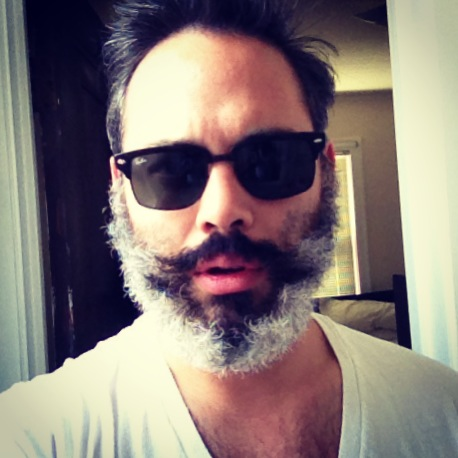
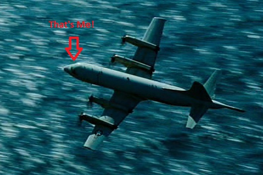

Award winning (see below) member of the Kellogg Community. Passionate about many things.
Awarded for outstanding contributions to the nation of Iceland
Awarded the piloting role for a fly-by action shot for the movie, "Transformers 2." 
Individually tasked to combat the Cobra Kai dojo in one-on-one karate fights. Defeated 3 members of the Dojo with a bruised knee without losing honor.